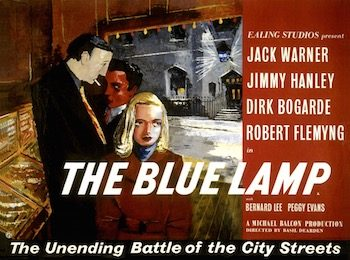

The Blue Lamp
Studio: Ealing Studios
Starring: Jack Warner, Dirk Bogarde, Robert Flemyng
Director: Basil Dearden
Writer: T. E. B. Clarke
Producer: Michael Balcon
The Blue Lamp is a 1950 British police procedural film directed by Basil Dearden and starring Jack Warner as PC Dixon, Jimmy Hanley as newcomer PC Mitchell and Dirk Bogarde as criminal Tom Riley. The title refers to the blue lamps that traditionally hang outside British police stations.
Trivia
- The character of "Diana" was initially envisioned with Diana Dors in mind, to the extent that the character's name was derived from her own.
- Consequently, a decision was made by the director to pivot away from Dors and opt for a "waif type" persona, leading to the casting of Peggy Evans for the character.
- The production had the full co-operation of the Metropolitan Police, and the crew was thus able to use the actual Paddington Green Police Station at 64 Harrow Road, London W9 and New Scotland Yard for location work.
Filming Locations
- The scenes of the cinema robbery were filmed at the Coliseum Cinema on Harrow Road, next to the Grand Union Canal bridge.
Previous Showings
1 Run • 0 Festivals
All runs on record (1):
- October 9 - 12, 1993w/ Green for Danger